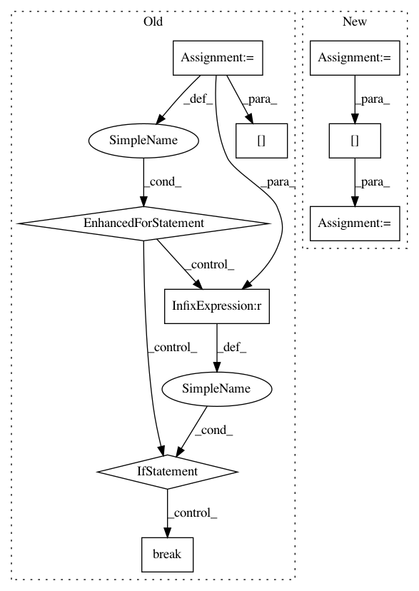

9a2903dac097a7f3633f6c828533ed385c7159c9,qucumber/utils/data.py,,extract_refbasis_samples,#Any#Any#,64
Before Change
:rtype: torch.Tensor
tmp = []
num_visible = train_samples.shape[-1]
for i in range(train_samples.shape[0]):
flag = 0
for j in range(num_visible):
if train_bases[i][j] != "Z":
flag = 1
break
if flag == 0:
tmp.append(train_samples[i])
z_samples = torch.zeros(len(tmp), num_visible, dtype=torch.double)
for i in range(len(tmp)):
for j in range(num_visible):
z_samples[i][j] = tmp[i][j]
return z_samples
After Change
:returns: The samples in the data that are only in the reference basis.
:rtype: torch.Tensor
idx = (
torch.tensor(train_bases == "Z", dtype=torch.uint8)
.all(dim=1)
.to(train_samples.device)
)
z_samples = train_samples[idx]
return z_samples
In pattern: SUPERPATTERN
Frequency: 3
Non-data size: 9
Instances
Project Name: PIQuIL/QuCumber
Commit Name: 9a2903dac097a7f3633f6c828533ed385c7159c9
Time: 2019-07-17
Author: emerali@users.noreply.github.com
File Name: qucumber/utils/data.py
Class Name:
Method Name: extract_refbasis_samples
Project Name: dask/dask-ml
Commit Name: 28793deaf98b37ef5d9425c1ec975a11b397e465
Time: 2018-10-13
Author: github@stsievert.com
File Name: dask_ml/model_selection/_incremental.py
Class Name: BaseIncrementalSearchCV
Method Name: _get_best
Project Name: ClimbsRocks/auto_ml
Commit Name: a23afcd39cc364f17e1adefc1a4309e99c4a3d7d
Time: 2017-05-19
Author: ClimbsBytes@gmail.com
File Name: auto_ml/utils_model_training.py
Class Name: FinalModelATC
Method Name: predict_uncertainty